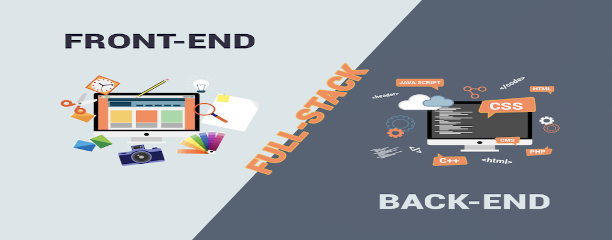
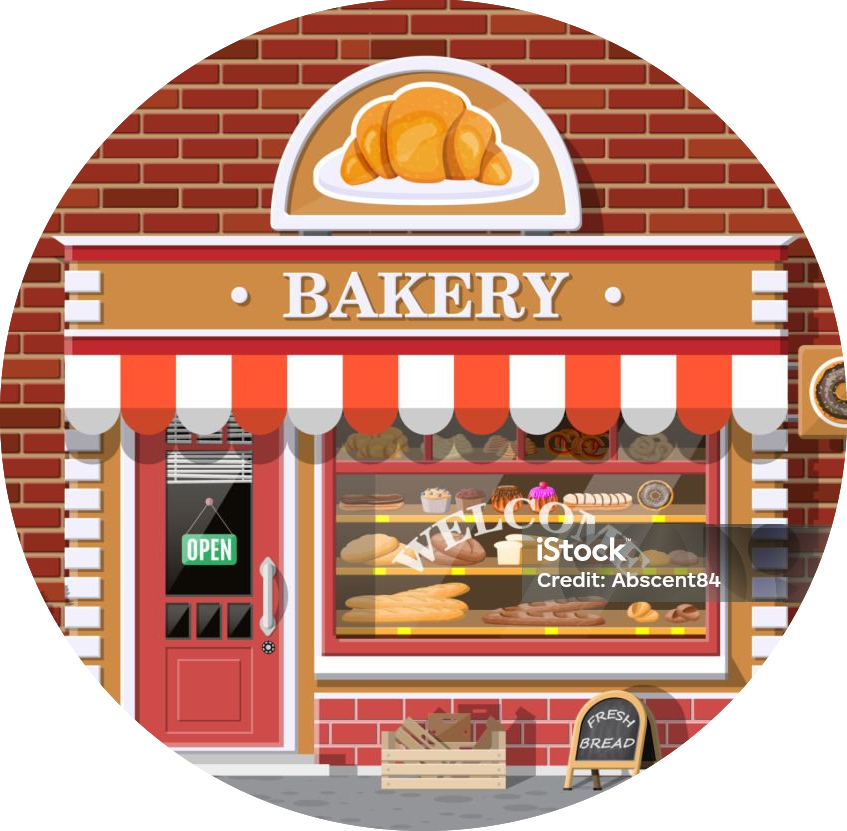
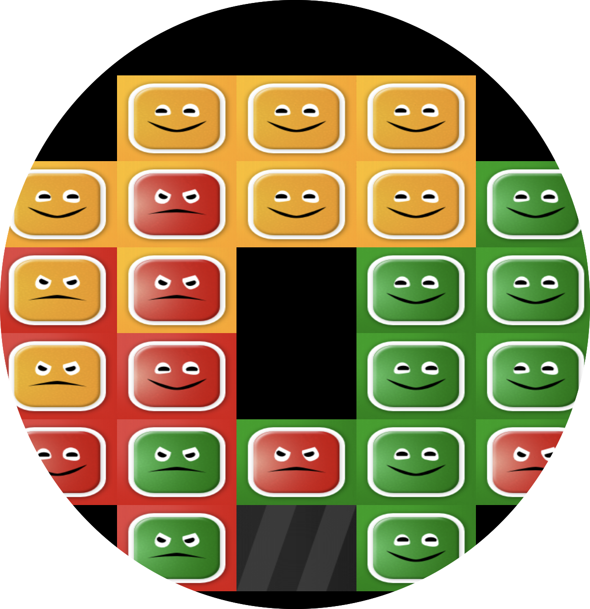

Про мене
Молодий IT-спеціаліст, який будує своє майбутнє в цифровому світі
Мене звати Костюченко Михайло, мені 23 роки. Я народився та виріс у невеликому місті Шостка Сумської області —
місці,
яке сформувало мій характер, цінності та прагнення до розвитку. З дитинства я відзначався допитливістю,
відповідальністю
та любов’ю до навчання.
У шкільні роки особливу увагу приділяв точним наукам — математиці, фізиці, хімії та інформтиці. Я неодноразово
представляв свою
школу на міських олімпіадах та займав призові місця. Саме тоді в мені заклалася здатність мислити аналітично,
працювати
з логічними структурами та не боятися складних задач. Ці навички стали фундаментом мого подальшого розвитку в
технічній
сфері.
Після закінчення школи я розпочав самостійне доросле життя в Києві, поєднуючи роботу та навчання. Здобував досвід у
різних сферах, що допомогло мені розвинути комунікабельність, відповідальність та вміння працювати з людьми. Згодом
прийняв усвідомлене рішення продовжити навчання у рідному місті — нині я студент 4 курсу Шосткинського інституту
Сумського державного університету та завершую навчання цього року.

Упродовж життя спорт був невід’ємною частиною мого розвитку. Він навчив мене дисципліні, витривалості, самоконтролю
та
постійній роботі над собою. Я переконаний, що саме спорт сформував у мені силу характеру та вміння не зупинятися
перед
труднощами.
До кінця літа 2025 року я працював на підприємстві, діяльність якого приносила користь Україні. Улітку 2025 року
одружився — це стало важливим і відповідальним етапом мого життя. Восени того ж року ми з дружиною переїхали до
Швейцарії як вимушені переселенці. Нове середовище стало для мене не перешкодою, а можливістю для глибокого
професійного
перезапуску.
Із вересня 2025 року я повністю занурився у сферу IT. Розпочав із шосткинських IT-курсів, де протягом п’яти місяців
вивчав мову програмування Lua та середовище розробки Defold. Після цього разом із ментором визначили наступний крок
—
системне навчання на developer-спеціаліста.
Наразі я проходжу навчання в Genius Space, де опановую сучасну веб-розробку. Перший етап був присвячений
створенню
веб-сайтів за допомогою HTML та CSS. У процесі навчання я створив свій перший проєкт, а також другий — власне
портфоліо,
яке ви зараз переглядаєте. Наступним кроком стало вивчення JavaScript, що дозволило мені глибше зрозуміти логіку
роботи
веб-додатків.
На сьогодні я активно шукаю можливість реалізувати себе в професійному середовищі та здобути перший комерційний
досвід у
сфері IT. У цій галузі я вже понад пів року й щодня продовжую зростати як спеціаліст.
Окремо хочу відзначити, що я впевнено працюю з інструментами штучного інтелекту. Вмію формулювати чіткі технічні
запити,
використовувати AI для оптимізації процесів, пошуку рішень та підвищення ефективності роботи. Я розглядаю
штучний
інтелект не як заміну спеціаліста, а як потужний інструмент для розвитку та пришвидшення професійного росту.


Мій рівень англійської мови наразі — впевнений A2, проте я системно навчаюся з репетиторами та щодня практикую мову,
тому вже наближаюся до рівня B1. Також паралельно підвищую рівень італійської мови, оскільки проживаю в
італійськомовному кантоні Швейцарії. Я розумію, що мови — це ключ до міжнародної кар’єри, тому приділяю цьому напрямку
особливу увагу.
Я амбітний, працьовитий, дисциплінований та швидко навчаюся. Маю аналітичне мислення, технічний склад розуму та
прагнення до постійного вдосконалення. Я молодий спеціаліст із чіткою метою — досягти високого професійного рівня в
сфері IT, працювати над сучасними цифровими продуктами та розвиватися в міжнародному середовищі.
Для мене програмування — це не просто професія. Це шлях постійного розвитку, творчості та створення цінності в цифровому
світі.
Junior Frontend Developer
📍 Швейцарія (готовий до віддаленої роботи)
📧 mihailkostucenko63@gmail.com
📞 +380986177950- український, +41764466291- швейцарський.
🔗 GitHub: https://github.com/Myhailo1504
🔗 Portfolio: https://github.com/Myhailo1504/my-portfolio.git
ПРОФЕСІЙНИЙ ПРОФІЛЬ
Мотивований Junior Frontend Developer із технічним складом мислення та понад 6 місяцями інтенсивного навчання у
сфері
IT. Маю впевнені знання HTML та CSS, досвід створення адаптивних веб-сайтів і роботи з Git, GitHub, Figma та
сучасними
AI-інструментами.
Швидко навчаюся, дисциплінований, відповідальний та орієнтований на результат. Активно розвиваю знання JavaScript та
прагну отримати перший комерційний досвід у веб-розробці.
ТЕХНІЧНІ НАВИЧКИ
Frontend:
HTML5
CSS3
Flexbox
CSS Grid
Адаптивна верстка
Створення форм
Базові анімації
Основи JavaScript (змінні, функції)
Git
GitHub
VS Code
Figma (верстка з макетів)
ChatGPT / AI-інструменти
Додатково:
Lua (базовий рівень)
Defold (розробка початкових ігрових проєктів)
ПРОЄКТИ
1. Website “Bakery”
Адаптивний веб-сайт пекарні.
Реалізовано:
🔹багатосторінкову структуру
🔹адаптивність під мобільні пристрої
🔹сучасну верстку
🔹форми зворотного зв’язку
2. Personal Portfolio Website
Персональний сайт-портфоліо з описом проєктів та навичок.
Реалізовано:
🔹адаптивний дизайн
🔹структуровану подачу інформації
🔹оптимізацію структури коду
3. Початкові проєкти в Defold (Lua)
Розробка простих ігрових механік, логіки та UI.
GitHub: всі проєкти доступні у відкритому доступі.
ДОСВІД РОБОТИ
Завідувач складу (військове виробництво)
2022 – 2025
🔹Організація обліку матеріалів
🔹Проведення інвентаризацій
🔹Відповідальність за матеріальні цінності
🔹Робота з документацією
🔹Контроль процесів та звітність
🔹Розвинув відповідальність, системність мислення та високий рівень дисципліни.
ОСВІТА
Шосткинський інститут Сумського державного університету
Спеціальність: Обладнання хімічних виробництв і підприємств будівельних матеріалів
2022 – 2026 (очікуване завершення — червень 2026)
МОВИ
Українська — рідна
Російська — вільно
Англійська — A2 (B1 in progress)
Італійська — A1 (A2 in progress)
Мої проекти
📌 Проєкт №1 — “Genius Test”
🔗 https://github.com/Myhailo1504/genius_test
Це перший повністю завершений веб-проєкт, який я створив самостійно з використанням сучасних веб-технологій HTML,
CSS та
SCSS, та з частковою інтеграцією JavaScript. Проєкт демонструє вміння будувати складну структуру сайту, розділяти
контент за секціями та створювати чистий і зручний інтерфейс.
Що реалізовано:
🔹Повністю адаптивна структура сторінки — сайт коректно відображається на різних екранах;
🔹Розбиття стилів на окремі файли SCSS для кращої організації коду;
🔹Підключення сучасних технологій (CSS/SCSS) для професійної стилизації;
🔹Структуровані стилі та наповнення сторінки, що відповідають UI/UX стандартам;
🔹Початкові використання JavaScript для інтерактивних елементів.
Мій розвиток у цьому проєкті:
🔹Я навчився організовувати проєктну структуру так, щоб код був зрозумілий і підтримуваний;
🔹Став впевнено працювати з препроцесорами стилів (SCSS), що є важливою навичкою в сучасній розробці;
🔹Набув практики у роботі з різними типами файлів: стилі, шрифти, зображення;
🔹Показав здатність доводити проєкт до логічного і технічного завершення.

📌 Проєкт №2 — “My Portfolio”
🔗 https://github.com/Myhailo1504/my-portfolio
Це персональний веб-сайт-портфоліо, який я створив для демонстрації своїх навичок і досвіду. Портфоліо є основою для
презентації своїх проєктів, навичок та професійного профілю потенційним роботодавцям, рекрутерам або колегам.
Що реалізовано:
🔹Сайт містить інформацію про мене, мої проєкти та посилання на GitHub;
🔹Створено чистий та приємний UI дизайн із використанням HTML та CSS;
🔹Впроваджено адаптивну структуру для коректного відображення на мобільних пристроях;
🔹Показано вміння структурувати контент таким чином, щоб він був легко сприйнятий користувачем.
Роль цього сайту в моєму професійному розвитку:
🔹Цей проєкт виступає моєю візитівкою розробника: кожен потенційний роботодавець може побачити мої навички та
реальні
приклади роботи;
🔹Я навчився, як правильно презентувати інформацію про себе і власні проєкти;
🔹Закріпив навички адаптивної верстки та чистої структури HTML/CSS;
🔹Підготував платформу, яку можу подальше розвивати, підключаючи JavaScript та нові інтерактивні елементи
📌 Початковий проєкт №3 - “Colorside Tutorial”
🔗 https://github.com/Myhailo1504/colorside_tutorial
Цей проєкт був створений у процесі мого навчання розробці ігор із використанням мови програмування Lua та ігрового
рушія
Defold. Його основною метою було практичне знайомство з базовими принципами розробки інтерактивних додатків, логікою
ігрових об'єктів та структурою ігрового проєкту.
Проєкт є частиною мого раннього етапу розвитку як розробника, коли я активно освоював нові інструменти програмування
та
вивчав основи роботи з ігровими рушіями.
Що реалізовано:
🔹Робота з ігровим рушієм Defold
🔹Написання базової логіки гри на мові програмування Lua
🔹Створення та налаштування ігрових об'єктів
🔹Робота з компонентами сцени та їх взаємодією
🔹Реалізація простої ігрової механіки
🔹Ознайомлення з архітектурою ігрового проєкту
🔹Використання системи контролю версій Git та GitHub
Мій розвиток під час створення цього проєкту:
🔹вперше отримав практичний досвід програмування на Lua
🔹навчився працювати з ігровим рушієм Defold
🔹зрозумів принципи створення ігрових сцен та об'єктів
🔹отримав базові знання про ігрову логіку та взаємодію елементів
🔹почав використовувати GitHub для збереження та публікації своїх проєктів
